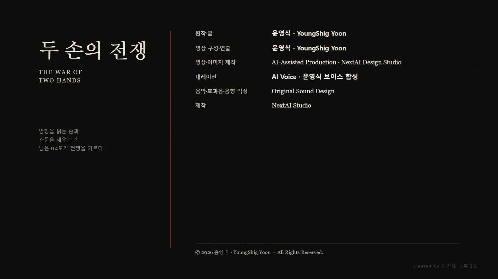

一. 포격
말데크의 밤은 어둡지 않았다.
행성이 너무 오래 포격을 받아 대기가 빛을 머금고 있었다. 화성 함대의 광자포가 대륙의 가장자리를 훑을 때마다 하늘이 붉게 젖었다. 빛은 구름 사이로 번졌고, 바다는 검게 끓었다.
함대는 궤도 바깥에서 천천히 내려왔다. 서두를 이유가 없었다. 말데크에는 궤도까지 올라올 무기가 없었다.
광자포의 빔은 소리를 내지 않는다. 도착한 다음에야 소리가 생긴다. 북반구 해안의 대기 정화탑 열두 기가 동시에 꺼졌고, 삼 초 뒤에 그 소리가 내륙까지 밀려왔다. 사람들은 탑이 꺼지는 것을 먼저 보고, 꺼지는 소리를 나중에 들었다. 그 삼 초가 이 전쟁의 모든 것이었다.
돔 도시 열세 곳이 불탔다. 지하 수로가 무너졌고, 물이 도시의 바닥부터 차올랐다. 도시를 덮은 투명한 껍질은 열을 견디도록 설계되어 있었다. 물을 견디도록 설계되지는 않았다.
방어 위성 여섯 기가 행성 주위를 느리게 돌고 있었다. 르네가 세운 것들이었다. 위성들은 지금 자기를 만든 함대를 향해 돌아서 있었다. 공명은 끊어지기 직전이었다.
말데크는 두 종족이 함께 쓰던 행성이었다. 치우가 자리를 고르고 르네가 세웠다. 그 순서는 오래 지켜졌다. 언제부터 지켜지지 않았는지는 아무도 정확히 말하지 못한다.
장면 이미지 · 一. 포격


二. 돌 원
아라는 관측소의 돌 원 안에 앉아 있었다.
돌은 일곱 개였다. 어느 것도 정밀하게 다듬어지지 않았다. 하나는 금이 가 있었고, 하나는 절반쯤 모래에 묻혀 있었다. 르네라면 이것을 건축물이라고 부르지 않았을 것이다. 치우에게도 이것은 건축물이 아니었다.
여기는 자리였다.
치우도 세울 줄은 안다. 세우지 않기로 했을 뿐이다. 세우면 세운 것이 남고, 남은 것은 방향을 고정한다. 치우는 방향이 고정되는 것을 견디지 못한다.
아라가 눈을 감았다.
행성 전체에서 치우들의 생각이 그녀에게 흘러들었다.
물에 갇힌 사람이 마지막으로 계산한 수심. 무너지는 탑 아래에서 아직 손을 놓지 않은 기술자. 아이를 어느 쪽으로 밀어야 하는지 고르는 짧은 순간. 이미 늦었다는 것을 알면서도 늦지 않았다고 생각하기로 한 사람들.
아라는 그 전부를 한 다발로 묶었다. 말데크의 자기장과 수십만 개의 의식이 하나의 고리로 이어졌다.
방어망이 켜졌다.
그것은 벽이 아니었다. 벽은 빛을 막지 못한다. 아라가 만든 것은 빛이 도착할 수 있는 경로를 여러 갈래로 갈라 놓는 구조였다. 도착을 막는 대신, 도착할 수 있는 곳을 너무 많이 만들어 버리는 방식이었다.
다음 사격이 왔다.
여섯 발이 대기권 상층에 닿는 순간 갈라졌다. 한 발은 상층에서 그대로 사라졌다. 한 발은 남반구의 무인 사막에 떨어져 유리질 웅덩이를 남겼다. 열두 개의 잔광이 우주 공간으로 흩어졌다. 어느 것도 도시에 닿지 않았다.
궤도 위에서 화성 함대의 표적 화면이 한꺼번에 비었다.
장면 이미지 · 二. 돌 원


三. 네 개의 문
라스는 기함의 정렬실에 있었다.
화면에는 표적이 없었다. 치우의 방어망이 행성을 어둡게 덮고 있었다. 광학으로는 아무것도 잡히지 않았다.
라스는 표적 식별을 광학에서 질량 신호로 바꿨다. 보이지 않아도 무게는 남는다. 행성은 자기 무게를 숨기지 못한다.
화면에 말데크의 윤곽이 다시 떴다. 이번에는 빛이 아니라 중력으로 그려진 윤곽이었다. 지형은 사라지고 밀도만 남은 행성이 회색 등고선으로 화면 위에 떠올랐다.
화성 전쟁평의회: "치우의 정신 교란인가?"
라스: "아닙니다. 도착 경로를 나눈 겁니다. 계속 쏘면 계속 나뉩니다."
화성 전쟁평의회: "그러면 나눌 수 없는 것을 쏴라."
네 개의 위성이 궤도에서 자세를 바꾸기 시작했다.
아데나스. 마그네스. 아르모스. 포러스.
원래는 화성의 방어 시설이었다. 지키기 위해 만든 것들이었다. 이제 네 위성의 중심이 열렸다. 동심으로 겹친 고리들이 하나씩 뒤로 물러나면서 긴 어두운 구멍이 드러났다. 구멍 안쪽에서는 아무 빛도 나오지 않았다. 행성 핵 관통기는 빛나지 않는다. 열려 있을 뿐이다.
위성 표면에 새겨진 르네의 규격선이 붉게 드러났다. 네 위성의 규격선은 완전히 같았다. 같은 도면에서 나왔기 때문이다.
라스는 그 규격을 자기 손으로 그린 적이 있다. 관문을 만들 때였다.
문화를 세우는 기술과 행성을 부수는 기술은 같은 기술이다. 르네는 그것을 오래전부터 알고 있었고, 알면서도 두 개를 나누어 부르지 않았다. 나누어 부르는 순간 하나를 포기해야 한다는 것을 알았기 때문이다.
라스의 목덜미에서 신경 차폐기가 미세하게 진동했다. 르네 병사는 모두 이 장치를 이식받는다. 감정을 없애는 장치가 아니다. 감정을 한 점으로 압축해 바깥으로 밀어내는 장치다. 없앤 것이 아니라 옮긴 것이므로, 압축된 감정은 어딘가에서 계속 밀도를 높인다.
차폐기 안쪽에서 라스는 하나를 기억하고 있었다.
관문이 열리다 말고 닫혔다. 세 겹의 정렬층 중 바깥층만 작동하고 안쪽 두 층이 따라오지 않았다. 그 안에 누나가 있었다. 좌표는 정확했다. 도면대로였다. 정확했는데도 도착하지 않았다.
라스는 그날 이후로 모든 수치에서 오차를 지우는 사람이 되었다. 오차가 없었다면 문이 닫히지 않았을 것이라고 믿었기 때문이다.
장면 이미지 · 三. 네 개의 문


四. 맞물림
아라가 라스를 감지한 것은 그때였다.
수만 명의 생각 사이에서 하나가 다르게 잡혔다. 차폐된 생각은 조용하지 않다. 눌려 있는 만큼 밀도가 높다. 아라는 그 밀도를 찾았다.
아라: "네가 쏘는 곳을 내가 먼저 본다."
라스의 정렬실 계기가 한 박자 흔들렸다. 그는 소리를 들은 것이 아니었다. 자기 계산의 결과를 자기보다 먼저 아는 무언가가 있다는 감각이었다.
르네에게도 감응의 소질은 남아 있다. 오래 쓰지 않아 신뢰할 수 없는 수준으로 줄었을 뿐이다. 라스는 그 줄어든 감각으로 아라를 알아봤다.
라스: "내가 계산하지 않으면, 네가 본 곳에 도착할 수 없어."
두 사람은 같은 전장을 보고 있었다. 한쪽은 가능성의 방향으로 보았고, 한쪽은 좌표로 보았다.
전투가 빨라졌다.
아라가 방어망의 밀도를 서쪽 대륙으로 옮겼다. 라스가 조준값을 동쪽으로 고쳤다. 아라가 다시 옮겼다. 라스가 이번에는 아라가 옮길 방향까지 계산해 두 좌표를 동시에 잡았다. 아라는 두 좌표 사이의 어디에도 밀도를 두지 않았다. 사격은 빈 곳에 도착했다.
네 위성의 자세가 초 단위로 다시 잡혔다. 장노출로 찍으면 궤도가 네 개의 가는 흰 선으로 남을 만큼 자주 움직였다. 함대의 나머지는 따라오지 못했다. 명령 계통이 두 사람의 속도보다 느렸다.
그리고 아라는 알았다. 이 속도로는 이길 수 없다는 것을.
방어망은 도착을 늦출 뿐이다. 네 개의 관통기가 정렬을 끝내면 도착은 나뉘지 않는다. 나눌 수 없는 것을 쏘라는 명령은 정확한 명령이었다.
장면 이미지 · 四. 맞물림


五. 0.4도
아라는 고리를 행성 전체로 넓혔다.
수십만 개의 의식이 하나의 방향으로 정렬됐다. 그녀는 말데크의 자기장을 잡았고, 자기장을 통해 지각 안쪽의 질량 분포를 잡았고, 질량을 통해 행성 자체를 잡았다.
치우가 행성을 만질 수 있는 것은 이때뿐이다. 세우지 않기로 한 종족이 세우는 대신 할 수 있는 일은, 이미 있는 것을 아주 조금 옮기는 것이다.
아라는 비틀었다.
0.4도.
행성의 자전축이 0.4도 움직였다. 사람의 눈으로는 아무 일도 일어나지 않았다.
바다가 먼저 알았다.
해류의 방향이 틀어졌다. 북반구의 대양이 제자리에서 밀려나 대륙 쪽으로 기울었다. 물은 지표를 넘지 않았다. 지표 아래로 갔다. 무너진 수로를 따라 돔 도시의 지하로 들어갔다.
수만 명의 치우가 물속에 갇혔다.
아라는 그 감각을 전부 받았다. 고리로 이어져 있었기 때문에 하나도 놓치지 못했다. 자기가 방향을 바꾼 결과였다.
궤도 위에서 라스의 계기가 값을 뱉었다.
라스: "네가 바꾼 0.4도가 도시를 죽이고 있다."
아라: "알고 있어."
라스: "멈출 수 있잖아."
아라: "멈추면 네 관통기가 정렬을 끝내."
라스는 화면을 봤다.
말데크의 자전축과 자기장축이 서로 어긋나 있었다. 관통기의 조준 기준은 자전축을 쓴다. 실제 핵의 중심은 이제 그 축 위에 없었다.
0.4도.
그 값을 지우면 관통기는 핵의 정중앙을 친다.
장면 이미지 · 五. 0.4도


六. 정렬
라스는 위성 네 기의 통제 신호에 접속했다.
정렬값을 바꾸려 했다. 그리고 르네의 규격이 무엇인지를 다시 확인했다.
네 위성은 하나의 규칙으로 묶여 있었다. 모든 부품이 같은 방식으로 반응하도록 설계된 구조였다. 그것이 르네의 장점이었다. 어느 하나가 고장 나도 나머지가 같은 값으로 움직인다. 어느 하나만 다른 값을 넣을 수는 없다는 뜻이기도 했다.
라스: "규격을 깨면 관통기가 폭발한다."
넣을 수 있는 것은 네 기 전부에 같은 값을 넣는 것뿐이었다.
라스는 정렬축 앞에 앉았다.
라스: "이 값을 지우면 더 정확해져."
아라: "더 정확히 무엇을 파괴하려고?"
라스: "말데크."
아라: "아니. 네가 잃어버린 문."
라스는 대답하지 않았다.
그는 0.4도를 지우지 않았다. 입력했다.
말데크의 중심을 향하던 네 개의 관통기가 같은 방향으로 0.4도 어긋났다. 방어망은 도착 경로를 여러 갈래로 나눈다. 그러나 라스가 넣은 0.4도는 나뉘지 않았다. 그것은 네 무기에 동일한 방향을 주었다.
발사는 조용했다. 관통기에는 추진 화염이 없다. 질량과 속도만 있다. 네 개의 어두운 물체가 궤도 먼지 위에 네 줄의 그림자를 끌면서 행성의 밤면으로 내려갔다. 네 줄은 나란했고, 나란한 채로 조금씩 벌어졌다.
첫 번째 관통기가 말데크의 외곽을 스쳤다. 대기 상층이 길게 찢어졌다.
두 번째 관통기가 지각을 뚫었다. 뚫린 자리에서 아무것도 솟아오르지 않았다. 안쪽으로 꺼졌다.
세 번째 관통기는 르네가 운용하던 방어 위성과 충돌했다. 궤도가 바뀌었다. 위성은 지구 방향으로 튕겨 나갔다. 훗날 달이 될 위성이었다.
네 번째 관통기가 말데크의 중심을 관통했다.
장면 이미지 · 六. 정렬


七. 접힘
행성은 폭발하지 않았다.
먼저 모든 소리가 사라졌다.
그 다음, 대륙이 접혔다.
바다는 위로 솟았고, 산맥은 뿌리부터 끊겼다. 피라미드형 공명탑들이 빛을 잃은 뒤 안쪽으로 무너졌다. 돔 도시들은 자기가 있던 위치에서 0.4도 옆으로 밀려났다. 밀려난 다음에 사라졌다.
말데크의 중심에서 푸른 균열이 열렸다.
균열 너머에는 별이 보이지 않았다. 아무것도 존재하지 않는 검은 공간이 있었다.
치우의 의식망이 그 안으로 빨려 들어갔다.
아라는 마지막까지 고리를 놓지 않았다. 놓으면 방향이 사라진다. 방향이 사라지면 아무것도 남지 않는다.
그녀는 남길 수 있는 것을 하나 골랐다.
말데크가 아니었다. 화성도 아니었다. 아직 아무도 도착하지 않은 세 번째 좌표였다.
아라는 그 좌표를 지구에 두었다. 관문이 아니라 자리로 두었다. 다듬지 않은 돌 몇 개와 손바닥만 한 광물 두 개면 충분했다. 하나는 위치를 고정하고, 하나는 위치가 바뀌면 그 차이를 기억한다.
아라: "여기는 아직 늦지 않았어."
라스: "무엇이?"
아라: "도착하지 않은 것."
궤도 위에서 라스는 자기 계기를 봤다.
말데크가 있던 자리에 아무것도 없었다. 질량 신호도 없었다. 화면은 처음 상태로 돌아가 있었다. 화성 전쟁평의회는 승리를 기록하라고 명령했다.
라스는 승리를 기록하지 않았다.
그는 측정 기록의 마지막 줄에 값 하나를 남겼다. 무엇의 값인지는 쓰지 않았다.
0.4도.
그 값은 이후 지구에 세워진 모든 축조 계열 유적에 같은 방향으로 남는다. 세운 자들이 틀린 것이 아니다. 그들이 기준으로 삼은 하늘이 그날 0.4도 움직였고, 아무도 그 사실을 기록에 쓰지 않았을 뿐이다.
장면 이미지 · 七. 접힘


